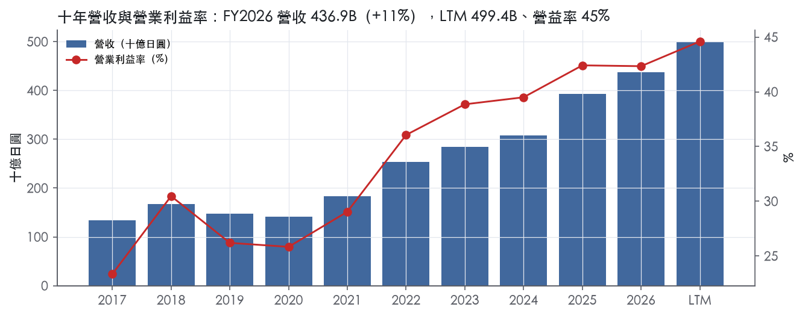
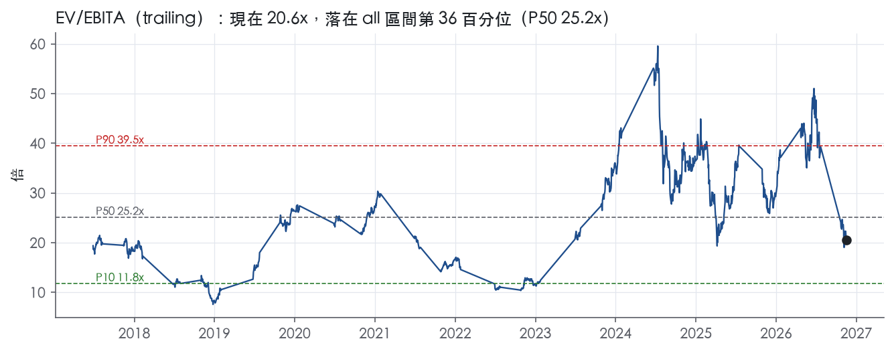

評等總表 › 未分類 › 6146.T
ディスコ（6146.T）
訂單撐盈餘上修，倍數不擴張，看多｜評等 加碼｜目標價 53026
評等歷史與財報快評
| 報告日 | 評等 | 目標價 | 當時股價 | 超額報酬 |
|---|---|---|---|---|
| 2026-11-16 | 加碼 | 53,026 | 44,000 | +14.0% |
| 評等 | 加碼（邊界，鄰近買進） |
| 12 個月目標價 | 53026 日圓 |
| 現價 | 44000.00 日圓（2026-11-16） |
| 預期報酬 | 股價 +20.5%＋股息 1.3%＝總報酬 +21.8%；日股門檻 7.8%，超額 +14.0% |
| 估值方法 | EV/EBITA 19.0x，套在未來四季的EBITA |
| 三情境 | 熊 28314／基準 51474／牛 72291 |
| 研究流程 | 四位研究員兩輪辯論＋研究總監裁決 |
| 資料來源 | EDINET、TDnet、J-Quants、Yahoo、FRED（全免費） |
目錄
第一章 結論摘要
訂單撐盈餘上修，倍數不擴張，看多（研究總監裁決，四位研究員兩輪辯論後）
評等 加碼（邊界，鄰近買進）｜12 個月目標價 53026 日圓（總監三情境機率加權 53295 與研究員中位數 52757 各半）｜現價 44000.00（2026-11-16）
預期報酬：股價 +20.5%＋股息 1.3%＝總報酬 +21.8%。日股門檻 7.8%，超額 +14.0%，離買進的分界不到三個百分點，屬邊界評等（落在其他級距的機率約四成）。
估值方法：EV/EBITA 19.0x，套在未來四季的EBITA。三情境：熊 28314（20%）／基準 51474（49%）／牛 72291（31%）。
什麼會讓研究總監改變看法：2027-01 短信 4–12 月出荷低於 434.2B 或契約負債自 79.62B 回落，y1 降回基準、倍數降到 17x、轉中性；TSMC 2028 先進封裝資本支出明確上修且 FY2028 上半期出荷年增仍高於 20%，y2 上調至 10% 以上、倍數回全期 P50。
投資論點
- 訂單撐盈餘上修：出荷年增 37.2%，契約負債升到 79.62B，未來一年營收可成長 22%。
- 倍數不擴張：目標倍數 19x 低於現行 20.6x，報酬只來自盈餘上修。
- 週期下行風險：客戶凍結設備投資時，出荷會連兩季年減，次年營益率可能掉到 35%。
關鍵數字
| 過去四季（實際，FY2027Q2） | 未來四季 | 第 5–8 季 | 第 9–12 季 | |
|---|---|---|---|---|
| 營收（B） | 499.4B | 609.3B | 651.9B | 684.5B |
| 營收成長 | 22.2% | 22.0% | 7.0% | 5.0% |
| 營業利益率 | 44.6% | 45.5% | 44.0% | 44.0% |
| EPS（日圓） | 1470.55 | 1790.46 | 1852.91 | 1946.09 |
| EPS 成長 | 26.6% | 21.8% | 3.5% | 5.0% |
| 每股股息（日圓） | — | 0.00 | 0.00 | 0.00 |
| P/E（現價） | 29.9x | 24.6x | 23.7x | 22.6x |
| 股息殖利率（現價） | 1.3% | — | — | — |
過去四季為申報數字；預測為研究總監的假設、程式計算。倍數與殖利率都用現價計算，用來看現價對應各期獲利的高低。
三情境
| 情境 | 機率（歷史） | 故事 | 未來四季營收成長 | 第 5–8 季營益率 | 倍數 | 目標價 | 股價漲跌 |
|---|---|---|---|---|---|---|---|
| 熊 | 20%（21%） | 對應風險表第 1 條（矽週期下行、客戶設備投資凍結）與第 2 條（TSMC／台灣集中度）：出荷連兩季年增轉負，新廠固定成本去槓桿，倍數貼全期 P10；美國下行配日圓 160，弱日圓只緩衝 NTM | 5.0% | 35.0% | 13.0x | 28314 | -35.6% |
| 基準 | 49%（48%） | 出荷與契約負債撐住未來一年營收上修，FY2028 下半年進入消化期，新廠折舊使營益率小幅回落，前瞻倍數不擴張 | 22.0% | 44.0% | 19.0x | 51474 | 17.0% |
| 牛 | 31%（32%） | HBM 與先進封裝擴產延到 FY2028，出荷預估續升，倍數回全期 P50 25.2x 但紀錄營益率不給溢價；美國上行配日圓 145，量主導 | 28.0% | 47.0% | 25.0x | 72291 | 64.3% |
目標價由程式依研究總監的驅動與倍數計算；機率由研究總監給定。括號內是歷史頻率：把這檔股票過去十年 12 個月報酬的波動形狀，置中在基準情境，結果落在各情境附近的比例。

四位研究員用不同方法各自估值，回應研究總監的質疑後交出第二輪，最後由總監逐點裁決。各研究員的主張見第七章，裁決理由見第八章，完整論證見《研究底稿》。
| 立場（一輪→二輪） | 加權目標價（一輪→二輪） | 評等（一輪→二輪） | 第二輪倍數 | 熊～牛目標價 | |
|---|---|---|---|---|---|
| R1 成長與敘事 | 看多→看多 | 55733→57506 | 買進→買進 | 21.0x | 31759～73103 |
| R2 資本報酬與價值 | 中性→看多 | 51976→52070 | 加碼→加碼 | 19.0x | 33941～71534 |
| R3 盈餘品質與下檔 | 中性→看多 | 54383→53444 | 買進→加碼 | 20.0x | 28269～72240 |
| R4 市場隱含預期 | 看多→看多 | 53926→50589 | 買進→加碼 | 18.5x | 30591～67805 |
| 研究總監裁決 | 看多 | 53026 | 加碼 | 19.0x | 28314～72291 |
目標價由程式依各自的驅動與倍數計算；評等＝機率加權總報酬 − 日股門檻。
第二章 業務概況
公司做什麼、賣給誰
DISCO是一家以半導體精密加工設備與消耗品為核心、靠「切、削、磨」三項利基技術建立高毛利護城河的日本設備商。公司及子公司23社、關聯公司2社構成集團，事業主要為半導體製造裝置（精密加工裝置）、精密加工工具的製造、銷售，以及附帶的保守・服務等。客戶主要是從事半導體或電子零件設計、製造的業者，多屬高科技產業。公司將裝置、消耗品、應用技術與售後服務整合為對客戶加工課題的整體解決方案，而非單純賣機台。這種「設備＋刀片／砥石耗材」的綁定模式，讓DISCO的毛利率長期維持在六到七成區間，FY2026毛利率70.1%（對應年度表）。
業務分部與產品
DISCO只有單一報告分部，有報未揭露任何子產品線或子分部的營收拆分。主要產品分兩大類：精密加工裝置，包括Dicing Saw（切割機）、雷射切割機、研磨機（Grinder）、拋光機（Polisher）、表面平坦化機（Surface Planer）；精密加工工具，包括Dicing Blade（切割刀片）、研磨輪（Grinding Wheel）、乾式拋光輪、砥石應用製品。製造端由當社本體及株式会社ダイイチコンポーネンツ負責，銷售與保守服務則透過當社本體加上多家海外子公司（DISCO HI-TEC美國、新加坡、歐洲、中國、台灣、韓國）執行。FY2026全年營收436.89B日圓，年增11.1%，營益率42.3%。研究開發費總額34.16B日圓，集中在研磨（アブレイシブ）技術、雷射技術與軟體技術的工程師招募與非矽材料加工研發。設備投資總額32.71B，其中大部分為當社本體的29.06B，主要項目是郷原工場建設著手金10.31B及羽田R&D中心建設著手金3.63B，顯示公司正在擴產能並強化研發基地。裝置與消耗品兩個子類別個別佔營收比重，10-K未揭露，只能從決算短信的出貨額／銷售額趨勢間接判斷消耗品需求跟著客戶稼動率走。
客戶、地區與通路
DISCO的營收高度集中在亞洲，尤其中國、台灣兩地合計占比接近六成，反映先進封裝與晶圓代工資本支出的地理分布。FY2026按地區營收為：日本45.61B、中國134.98B、韓國33.07B、台灣117.38B、亞洲（其他）44.12B、美洲34.90B（其中美國33.68B）、歐洲26.84B，合計436.89B日圓。相較FY2025（日本41.04B、中國125.38B、韓國42.34B、台灣74.40B、亞洲33.89B、美洲48.38B、歐洲27.88B，合計393.31B），台灣占比由FY2025的約19%跳升至FY2026的約27%，是最大的區域結構變化。FY2026首度揭露單一客戶占比10%以上：台灣積體電路製造（TSMC）貢獻銷售額48.24B日圓，FY2025則無任一客戶達到10%門檻。這意味著先進邏輯／先進封裝客戶的集中度正在提高，公司對單一大客戶資本支出週期的敏感度也隨之上升。通路上公司透過海外子公司DISCO HI-TEC美國、新加坡、歐洲、中國、台灣、韓國進行銷售與保守服務，其中新加坡、中國、台灣三家子公司的對外銷售額占合併營收比重超過10%，屬於有報定義下的「特定子公司」。
最近四季發生了什麼
過去四個季度DISCO營收與獲利率同步走高，主因生成式AI帶動的資料中心投資延續，先進邏輯與HBM需求維持高水位。FY2026Q3（2025年12月底）營收109.29B日圓，年增16.8%，營益率43.3%；FY2026Q4（2026年3月底）營收133.06B日圓，年增10.2%，營益率44.2%（對應資料包季表）。FY2027Q1（2026年6月底）營收114.31B日圓，年增27.1%，營益率回落至42.9%；FY2027Q2（2026年9月底）營收142.75B日圓，年增36.4%，營益率躥升至47.4%，是近八季最高（資料包季表）。公司在2026年10月22日的決算短信中揭露FY2027上半年（4-9月）累計數字：出貨額284.58B日圓（年增37.2%）、銷售額257.06B日圓（年增32.1%）、營業利益116.64B日圓（年增47.9%，營益率45.4%）、經常利益114.44B日圓（年增44.0%，經常利益率44.5%）、歸屬母公司股東中間純利益80.37B日圓（年增43.7%，純益率31.3%）。損益面的解釋是匯率影響與高附加價值產品組合增加使毛利率上升，吸收了人事費與研發費等銷管費用的增加，帶來增益。公司首度公布4-12月期出貨額預估434.2B日圓，假設10-12月期匯率為1日圓兌151日圓。現金及約當現金期末餘額200.63B日圓，自由現金流為56.89B日圓（營業現金流111.71B日圓減投資現金流出54.81B日圓）。整體來看，出貨額成長幅度持續超過銷售額成長，意味在手訂單與未來認列的銷售額仍在墊高，這是觀察下一季營收能見度的關鍵指標。
公司自己說的成長引擎與策略
DISCO將自己定義為以「高度なKiru・Kezuru・Migaku技術（切、削、磨）」為單一事業領域、透過免費的TestCut（試切）服務建立技術信任與客製化解決方案的公司。公司強調「Fab Important戦略」，刻意保留自有製造機能而非走Fabless路線，理由是開發與製造一體化可加速PDCA、提升對客戶多品種少量生產的適應力，並透過內製關鍵零部件建立長期技術壁壘與供應鏈韌性。中長期目標以「DISCO VISION 2030」為里程碑，設定兩項量化指標：四年累計合併經常利益率20%以上、四年累計RORA（風險資產報酬率）20%以上，理由是半導體業界存在矽週期（シリコンサイクル），用四年累計指標比單年數字更能反映真實成長。公司認為未來成長引擎來自AI、IoT、自動駕駛相關領域對「Kiru・Kezuru・Migaku技術」用途的擴大，以及脫碳社會轉型帶動的半導體需求中長期擴張。決算短信則具體指出近期成長動能是生成式AI帶動的資料中心投資，拉動先進邏輯與HBM等高性能半導體相關裝置及消耗品需求。公司目前的獲利能力（FY2026營益率42.3%、FY2027Q2單季47.4%）已明顯高於自訂的經常利益率20%門檻，顯示矽週期上行階段公司的訂價力與產品組合優化效果正在充分發揮。台灣與中國客戶占比急速上升、TSMC單一客戶首次突破10%揭露門檻，代表DISCO對先進封裝資本支出週期的槓桿正在放大，一旦該週期轉弱，營收波動也會比過去更劇烈。整體而言，這是一家靠利基技術壁壘與高集中度大客戶綁定、處在半導體上行週期紅利中的高毛利設備商，核心風險在於客戶與地區集中度。

第三章 經濟護城河
結論：寬，趨勢穩定
DISCO 的護城河評為寬：切、削、磨製程的應用技術與耗材綁定形成轉換成本，讓 ROIC 在完整矽週期內每一年都高於資本成本，我們有把握這個狀態能延續 10 年以上。趨勢判為穩定而非變寬：利潤率結構性上移，但客戶與地區集中度同步升高，兩者相抵。
優勢來源
最主要的來源是轉換成本。原文指出，精密加工領域中加工工具的轉速、進給速度等條件稍有差異，加工結果就會大幅不同。原文也指出，最適裝置與耗材的選擇及細部條件設定，非精通該技術的工程師難以完成，顧客自行實施並不容易。公司以免費的加工驗證「測試切割（テストカット）」進入客戶，顧客先掌握所用產品、加工製程與加工條件，再決定採購。製程一旦用 DISCO 的裝置加刀片、砥石組合驗證並進入量產，更換供應商就得重做整套驗證，耗材需求因此跟著裝機量走。
第二個來源是成本優勢。原文指出，公司策略性內製裝置主要零件，既防止輕易模仿，也實現成本降低。公司刻意保有自有製造，開發與製造同處一地，規格變更與改善要求可以即時回饋給開發部門。
第三個來源是效率規模。原文稱該技術領域「非常利基」，熟悉此領域的工程師在人才市場上稀少，公司憑高市占承接大量測試切割來培養工程師。原文也指出，要做到同等的應用技術，需要 60 年以上的測試切割、龐大的驗證資料與能駕馭這些資料的工程師，對新進企業是非常高的進入障礙。市場小，學習量又集中在既有龍頭，新進者拿不到足夠訂單來攤提學習成本，符合效率規模的特徵。
材料中沒有專利、品牌授權或網路效應的直接證據，因此不列無形資產與網路效應。
數字上看得到嗎
ROIC 這個核心條件支持寬護城河：有資料的 9 年 ROIC 全部高於資本成本代理值 10.1%，十年平均 37.0%，平均超額 26.9%。ROIC 最低一年為 18.9%，落在營收衰退、資本支出／營收達 17.7% 的 FY2020（資料包年度表 FY2020），仍高於資本成本。毛利率十年平均 62.6%、標準差 5.1%、區間 55.5% 到 70.6%，顯示定價力穩定，而且在逐步上移。
數字也有和主張衝突的地方：ROIC 標準差 11.6%、營業利益率標準差 6.9%、營收成長標準差 15.7% 且最低為 -11.9%，波動並不小。最新 ROIC 41.1% 也低於高點 54.5%。我們仍維持寬的評級，理由是這些波動來自矽週期與擴產期的資本累積，而不是市占流失；毛利率的低點也沒有跌破長期區間。公司自己也因半導體業界存在矽週期，改用四年累計經常利益率作為重要業績指標。此外，資本成本代理值以美國 10 年債計算，比以日本 10 年債 2.841%為基準更保守，因此超額報酬的判斷有安全邊際。
什麼會侵蝕它
第一是客戶集中：FY2026 單一客戶 TSMC 的銷售額 48.24B 日圓達到揭露門檻，FY2025 則沒有任何客戶超過 10%。最大客戶的議價力上升，是最先可能壓縮毛利率的因素。
第二是中國：FY2026 中國營收 134.98B 日圓，是最大的地區。出口管制或國產替代政策可以逼客戶承擔重新驗證的成本，這是轉換成本最可能被外力抵銷的路徑。
第三是技術路徑：公司指出非矽材料的加工需求增加，並在雷射與軟體技術上積極招募工程師。如果新材料或新製程讓既有的刀片、砥石經驗不再適用，60 年資料庫的價值就會打折。FY2026 研究開發費 34.16B 日圓，顯示公司持續投入以守住這道防線。
對估值的含意
目標倍數應相對設備同業溢價：轉換成本與效率規模支撐 ROIC 在週期谷底也高於資本成本，盈餘品質優於一般週期股。目前 trailing P/E 29.9x（資料包快照）低於 5 年中位數 41.1x，溢價空間尚未被市場用盡。不過客戶集中度升高，溢價幅度應以 10 年中位數 30.8x為錨，不宜回到週期高點的倍數。
量化底稿：報酬率與利潤率的水準與穩定度
| 指標 | 最新 | 十年平均 | 標準差 | 最低 | 最高 |
|---|---|---|---|---|---|
| ROIC | 41.1% | 37.0% | 11.6% | 18.9% | 54.5% |
| 毛利率 | 70.1% | 62.6% | 5.1% | 55.5% | 70.6% |
| 營業利益率 | 42.3% | 33.4% | 6.9% | 23.4% | 42.4% |
| FCF 利潤率 | 22.5% | 17.5% | 6.7% | 4.5% | 26.4% |
| ROE | 25.1% | 20.8% | 5.3% | 12.4% | 27.6% |
程式計算。資本成本代理值（10 年債＋5%）：10.1%；ROIC 平均減資本成本：26.9%；ROIC 有資料的 9 年中，高於資本成本 9 年。
第四章 財務體質與盈餘品質
結論：中高品質，現金轉換持續優於淨利、槓桿近乎零現金淨額，但股東回饋偏保守且 FCF 定義有口徑落差需拆解
營業現金流與自由現金流對淨利的覆蓋率全數在綠燈區（CFO/NI LTM 1.29x、FCF/NI LTM 1.08x），應計比率為負值代表盈餘品質靠現金而非應計堆出來（量化底稿：應計比率 LTM -5.8%、十年平均 -2.1%）。唯一要注意的是公司自己揭露的「フリー・キャッシュ・フロー」口徑與資料包的 FCF 定義不同，FY2026 全年公司揭露的 FCF 為負 2.23B，原因是把 100B 定期存款申購算進投資活動現金流出，這是口徑差而非現金真的流失。
現金有沒有跟上盈餘
LTM 營業現金流／淨利 1.29x、近三年平均 1.04x、十年平均 1.16x，三個時間窗都在綠燈門檻之上，代表盈餘長期有現金支撐。FY2026 全年營業活動現金流為 133.54B，較前期增加 10.9%，主要來自稅前利益與折舊費用的認列。FY2027 上半年營業活動現金流大增至 111.71B，較去年同期 39.68B 成長 181.5%，主要來自中間純利益與契約負債增加。投資活動現金流出在 FY2026 全年為 135.77B，當中包含定期存款申購 100B 與工廠用地建物等有形固定資產取得支出，FY2027 上半年投資活動現金流出 54.81B 中也有定期存款增加 41.84B。若扣除定期存款這類資金調度項目，FY2027 上半年公司自行揭露的合併 FCF 為正 56.89B，顯示真實營運現金生成能力沒有問題，FY2026 全年帳上 FCF 轉負只是定期存款配置造成的技術性現象。
公司調整了什麼（GAAP 與非 GAAP 的差距）
本公司未編製非 GAAP 盈餘，決算短信與有報僅揭露日本準則下的營業利益、經常利益與淨利，沒有額外的調整後 EPS 或 Adjusted EBITDA 欄位。FY2027 上半年營業利益 116.64B，但經常利益只有 114.44B，差額主要來自營業外費用中的匯兌損失 3,101M（前期同期匯兌為獲利 21M），這是日圓匯率波動造成的真實損益科目，不是會計估計調整，對出口型半導體設備廠而言屬經常性風險而非一次性。特別損失合計 700M，其中包含德國子公司 DISCO HI-TEC EUROPE GmbH 舊建物拆除前的減損損失 636M，這是因為決定拆除重建既有建物、帳面價值按使用價值（估列為零）減記所致，屬於一次性非現金損失，規模相對 80.37B 的中間淨利極小，不影響盈餘品質判斷。FY2026 全年同期也有建物解體費用 817M 列入特別損失，同樣是廠房更新的一次性支出。股權薪酬（SBC）佔營收比率在量化底稿中為「—」，代表資料包內沒有可用數字，無法對 SBC 加回或折價評估，這是資料缺口而非紅旗。
資產負債表與資本配置
淨負債為負 200.63B，淨負債／EBITDA LTM -0.84x、近三年 -1.28x、十年平均 -1.52x 全部綠燈，公司是淨現金狀態，槓桿完全不構成風險。FY2027 上半年末總資產 824.58B，較前期末 743.41B 增加，主要是現金及存款與流動資產增加；現金及存款從 284.58B 增至 342.41B。自己資本比率從 FY2026 末的 78.9%（有報口徑）降到 FY2027 上半年末 76.1%，公司解釋主要是契約負債增加所致，比率下降幅度小，不影響清償能力評估。股東回饋政策採「基本配當率 25%（與業績連動）＋年度末剩餘資金三分之一追加配息」的方式，刻意把配息平準化、避免大幅減配，這解釋了（股利＋回購）／淨利長期落在 34%–40% 區間、未達 50% 綠燈門檻的原因。公司未來資金需求估列為營運資金 72.8B、設備擴充資金 16.4B、技術購置儲備金 32B、稅金與配息支付等 34.9B，相對淨現金 200.63B 與穩定的營業現金流，資金調度完全無壓力。
紅旗逐條說明
應計比率、CFO/NI、FCF/NI、淨負債/EBITDA 四項全部綠燈，沒有程式標出紅旗，不需解釋真假問題。稀釋股數年變動燈號為黃（LTM 0.0%、近三年 0.0%、十年平均 0.1%），原因是公司股數基準極為穩定、僅有少量新股予約權（股票選擇權）帶來十年平均 0.1% 的微幅稀釋，FY2027 上半年新株予約權餘額僅 1,090M、股本因股票發行增加 225M，規模對市值 4,774.33B 而言微不足道，屬於假警報，不是真實稀釋風險。（股利＋回購）／淨利燈號為黃（LTM 34.2%、近三年 33.8%、十年平均 39.6%），這不是現金不足或股東回饋不力造成的紅旗，而是公司刻意的配息平準化政策，把應配發的盈餘留在資產負債表上以備未來設備投資與技術購置，公司在有報已明確說明此機制，在淨現金狀態下這是穩健而非警訊。SBC／營收與利息保障倍數 LTM 欄位均顯示「—」，代表資料不足以評分，不是公司財務本身的問題，但也意味著無法對股權薪酬的實質成本做加回判斷，這是分析侵蝕點而非盈餘品質缺陷。
對估值的含意
估值應以 GAAP 的經常利益與淨利作為基礎，公司本身未提供非 GAAP 調整後盈餘，FX 損益與德國廠房減損規模小且屬正常經營波動，沒有系統性膨脹或美化盈餘的證據，不需要對盈餘打折。淨現金 200.63B、利息保障倍數十年平均逾 5,000x，槓桿完全不構成倍數上限的限制因素，EV/EBITDA、EV/EBITA 等企業價值倍數可以直接套用。唯一要留意的是 FY2026 全年公司自行揭露的 FCF 因 100B 定期存款申購而轉負，評估自由現金流殖利率時應採用扣除定期存款調度後的營運現金流基礎（如資料包定義的 FCF 98.32B 或半年度口徑 56.89B），避免被單一期間的資金調度誤導而低估公司的現金生成能力。
量化底稿：盈餘品質計分表
| 項目 | LTM | 近三年 | 十年 | 燈號 | 規則 |
|---|---|---|---|---|---|
| 營業現金流／淨利 | 1.29x | 1.04x | 1.16x | 綠 | ≥1.00x 綠、<0.80x 紅 |
| 自由現金流／淨利 | 1.08x | 0.71x | 0.71x | 綠 | ≥0.90x 綠、<0.60x 紅 |
| 應計比率（(淨利−CFO)／平均總資產） | -5.8% | -0.6% | -2.1% | 綠 | ≤0.0% 綠、>5.0% 紅 |
| SBC／營收 | — | — | — | — | ≤3.0% 綠、>8.0% 紅 |
| 淨負債／EBITDA | -0.84x | -1.28x | -1.52x | 綠 | ≤1.50x 綠、>3.00x 紅 |
| 利息保障倍數（營業利益／利息） | — | — | 5315.3x | — | ≥8.00x 綠、<3.00x 紅 |
| 稀釋股數年變動 | 0.0% | 0.0% | 0.1% | 黃 | ≤0.0% 綠、>3.0% 紅 |
| （股利＋回購）／淨利 | 34.2% | 33.8% | 39.6% | 黃 | ≥50.0% 綠、<0.0% 紅 |
程式計算；燈號以 LTM（無則近三年平均）判定。
第五章 主要風險
結論：最大風險是矽週期下行撞上台灣與TSMC單一客戶集中度已明顯上升，一旦先進封裝資本支出轉弱，DISCO的營收與42–47%的營益率會同時向下修正，而且沒有分散緩衝。
五大風險表
| 風險 | 觸發指標（看什麼數字、在哪裡看） | 對 EPS 的影響方向與粗略幅度 | 未來 12 個月發生機率（高／中／低） | 出處 |
|---|---|---|---|---|
| 半導體矽週期下行、客戶設備投資凍結或減產 | 決算短信每季「出荷額」年增率、公司全年出貨額計畫（4-12月期434.2B日圓）與實際差距 | 方向：負向，大／過去矽週期下行曾使營收年減雙位數（FY2019營收年減11.9%、FY2020再減4.4%，對應年度表） | 中 | 風險描述；幅度依年度表歷史波動 |
| 台灣／TSMC單一客戶集中度急升 | 季報分部地區營收（台灣占比）、單一客戶占比10%揭露門檻是否持續出現 | 方向：負向，大／台灣占比FY2025約19%升至FY2026約27%，TSMC單一客戶貢獻48.24B日圓（業務概況章） | 中 | 本章判斷，數字引自業務概況章 |
| 匯率波動（日圓兌日圓） | 決算短信假設匯率（10-12月期假設151円/日圓）與實際USDJPY（資料包mac.usdjpy.latest 158.23）的差距 | 方向：不確定（日圓貶值對出口收入通常正向，但短信本期已出現為替差損3.10B） | 中 | 風險描述與數字；差距判斷 |
| 新加工技術取代精密鑽石砥石 | 公司是否公布雷射、電漿加工技術商用化進度、研發費用占營收比重變化 | 方向：負向，中／長期若替代技術成熟會侵蝕核心耗材營收，但目前無具體時程 | 低 | |
| 資安事故導致生產或出貨停止 | 公司是否公告資安事件、生產中斷公告 | 方向：負向，幅度不確定 | 低 |
逐條說明
矽週期下行是最大且最可監測的風險，公司自己承認「半導體は、需給のバランスによって變化する市場」，下行循環或客戶設備投資凍結、減產會直接衝擊業績。這不是假設性風險：FY2019營收年減11.9%、FY2020再年減4.4%（對應年度表），同一時期EPS也同步重挫（FY2019 266.04，FY2020 255.19，對應年度表）。目前公司營益率處於歷史高點（FY2027Q2單季47.4%，季表），這種高點本身代表下行時的利潤率壓縮幅度也會更大。監測指標是決算短信每季披露的「出荷額」年增率，以及公司罕見首次揭露的4-12月期出貨額計畫434.2B日圓（決算短信）能否達成，若連續兩季出貨額年增率轉負，就是訊號。
客戶與地區集中度風險是公司業務概況章揭示、但公司風險章完全沒寫的結構性變化。FY2026首度出現單一客戶占比超過10%的揭露：台灣積體電路製造貢獻銷售額48.24B日圓，FY2025則無任何客戶達到此門檻（業務概況章引自）。同時台灣地區營收占比由FY2025約19%躍升至FY2026約27%（業務概況章）。這代表DISCO對先進邏輯／先進封裝單一客戶資本支出週期的槓桿正在放大，一旦該客戶放緩資本支出，衝擊會比過去分散客戶結構時更劇烈且更難被其他地區抵銷。監測指標是每年有報分部地區營收揭露、以及是否持續出現單一客戶10%揭露。
匯率風險是公司明確承認、且短信已實際出現負面影響的風險。公司「國內で製品を製造し、世界中の半導体メーカ、電子部品メーカへ輸出」，外幣結算需求使匯率變動影響業績。本期中間損益表已出現為替差損3.10B（決算短信損益表），對比前期為替差益0.02B，方向已轉負。公司對10-12月期的假設匯率是151円/日圓（決算短信），而最新市場匯率USDJPY為158.23（資料包mac.usdjpy.latest，2026-11-06），實際匯率比公司假設更貶，若此趨勢延續，日圓進一步貶值對出口營收名目金額通常正向，但換算損益的波動本身仍是不確定性來源。監測指標是每季決算短信的「為替差損益」科目與假設匯率的差距。
新加工技術取代精密鑽石砥石是公司自己列為風險但沒有給出時程或財務影響的長期技術風險：「今後、精密ダイヤモンド砥石に替わる加工技術が誕生した場合、當社グループの業績が影響を受ける可能性があります」。公司因應措施是開發雷射、電漿加工技術。由於耗材（精密加工ツール）綁定裝置的商業模式是DISCO高毛利率（FY2026毛利率70.1%，對應年度表）的核心，若替代技術商用化成功，衝擊方向是負向且幅度可能大，但12個月內發生機率低，因為原文未提供任何具體時程。
資安事件風險公司列為風險但同樣沒有具體數字：「サイバー攻撃、情報漏洩等が発生した場合、競争力や技術的優位性の毀損、製品の生産・出荷を含む業務の停止…財務状況に影響を及ぼす可能性があります」。公司已設置常設資安委員會與監督體制應對。由於無具體事件歷史，12個月內發生機率列為低。
公司沒寫、但我們認為該注意的
庄原工場與羽田R&D中心大規模擴產能計畫的執行風險：公司FY2026設備投資總額32.71B日圓中，庄原工場建設著手金10.31B日圓、羽田R&D中心建設著手金3.63B日圓（業務概況章引自），這是公司在矽週期高點擴大資本支出下注未來需求。若矽週期提前轉弱，固定資產投資完工後的折舊負擔會在營收下滑階段同時侵蝕營益率，形成「營收下、固定成本上」的雙重壓力，但這一風險在有報風險章完全沒有被提及。
估值已隱含高成長延續的預期，使下行時的倍數修正風險加大：目前trailing P/E 29.9x，雖低於5年中位數41.1x（資料包倍數帶），但仍高於過去累積的EV/EBITDA（19.2x）、EV/Sales（9.2x）等倍數的全期起點水準（EV/Sales全期起點7.5x，資料包倍數帶）。若矽週期轉弱，市場不僅會下修盈餘，也可能同時下修倍數，兩者疊加會放大股價跌幅，這是公司風險章未觸及、但屬於估值結構的額外脆弱點。
第六章 市場在定價什麼
現價 44000.00 對應 trailing（過去四季）P/E 29.9x、EV/EBITDA 19.2x、EV/EBITA 20.5x、EV/Sales 9.2x、FCF 殖利率 3.6%。主要估值倍數 EV/EBITA 現在 20.6x，落在all區間第 36 百分位（P10／P50／P90 = 11.8x／25.2x／39.5x）。

把程式的機械基準預測放到現價下，市場付的前瞻倍數是：EV/EBITA（未來四季） 17.6x、P/E（未來四季） 25.2x、EV/EBITA（第 5–8 季） 15.8x、P/E（第 5–8 季） 22.6x。反推 DCF 顯示市價隱含未來五年營收年成長 13.6%（WACC 9.0%、終值成長 3.0%、FCF 利潤率 29.4%，SBC 不加回）。
| 倍數 | 現在 | all P10 | all P50 | all P90 | 現在分位 | 全期 P50 |
|---|---|---|---|---|---|---|
| P/E | 29.9x | 18.2x | 30.8x | 57.5x | 47.0% | 30.8x |
| EV/EBITDA | 19.2x | 10.6x | 21.8x | 36.2x | 39.1% | 21.8x |
| EV/EBITA | 20.6x | 11.8x | 25.2x | 39.5x | 35.8% | 25.2x |
| EV/EBIT | 20.6x | 11.8x | 25.2x | 39.5x | 35.8% | 25.2x |
| EV/Sales | 9.2x | 3.9x | 7.5x | 15.7x | 55.3% | 7.5x |
| P/S | 9.6x | 4.3x | 6.4x | 16.5x | 67.0% | 6.4x |
| P/FCF | 27.8x | 25.5x | 45.4x | 248.3x | 17.9% | 45.4x |
trailing 倍數（股價 ÷ 過去四季）；分位以每個交易日計算。
（日股同業籃尚未建置：評等門檻用日股絕對門檻＝日本 10 年公債＋股權風險溢酬 5%，見首頁。）
程式的機械基準（成長率從過去四季年增率三年收斂到 6%、利潤率持平）用 EV/EBITA all P50（trailing），套在 NTM 估值得到 63218（43.7%），市場現行前瞻倍數（現價 ÷ 基準 未來四季指標）一年後持平，套在基準 第 5–8 季指標得到 49836。這兩個數字只是參考點，不是本報告的目標價；研究員對這個定價的回應在第七章。
第七章 四位研究員的看法
下表是每位研究員第一輪（各自獨立）與第二輪（回應研究總監的質疑後）的結果。目標價全由程式依各自的假設計算。
| 立場（一輪→二輪） | 加權目標價（一輪→二輪） | 評等（一輪→二輪） | 第二輪倍數 | 熊～牛目標價 | |
|---|---|---|---|---|---|
| R1 成長與敘事 | 看多→看多 | 55733→57506 | 買進→買進 | 21.0x | 31759～73103 |
| R2 資本報酬與價值 | 中性→看多 | 51976→52070 | 加碼→加碼 | 19.0x | 33941～71534 |
| R3 盈餘品質與下檔 | 中性→看多 | 54383→53444 | 買進→加碼 | 20.0x | 28269～72240 |
| R4 市場隱含預期 | 看多→看多 | 53926→50589 | 買進→加碼 | 18.5x | 30591～67805 |
| 研究總監裁決 | 看多 | 53026 | 加碼 | 19.0x | 28314～72291 |
目標價由程式依各自的驅動與倍數計算；評等＝機率加權總報酬 − 日股門檻。
分歧度：第一輪 加權目標價 51976～55733（區間＝現價的 9%）· 倍數 19～21x · 立場 看多×2、中性×2；第二輪 加權目標價 50589～57506（區間＝現價的 16%）· 倍數 18.5～21x · 立場 看多×4（方向一致）。

| 研究員 | 第二輪主張 | 堅持的理由 |
|---|---|---|
| R1 成長與敘事 | 看多，未來一年營收成長 24%，倍數 21x。 | 寬護城河支持倍數不打折，P/E 貼近十年中位數。 |
| R2 資本報酬與價值 | 看多，未來一年營收成長 20%，倍數 19x。 | 峰值盈餘拿不到中位數倍數，次年成長只剩 3%。 |
| R3 盈餘品質與下檔 | 看多，未來一年營收成長 20%，倍數 20x。 | 新廠折舊讓下行更陡，熊情境營益率掉到 35%。 |
| R4 市場隱含預期 | 看多，未來一年營收成長 22%，倍數 18.5x。 | 近一年比市場樂觀，中期比市場悲觀，倍數不擴張。 |
每位研究員的逐條回應與完整論證見《研究底稿》（6146.T_研究底稿_2026-11-16.docx）。
第八章 研究總監裁決
分歧登記
| 分歧點 | R1 | R2 | R3 | R4 | 什麼資料會分出勝負 |
|---|---|---|---|---|---|
| NTM 營收成長 y1 | 24% | 20% | 20% | 22% | 2027-01 短信 4–12 月出荷對 434.2B；FY2028 上半期營收年增 |
| Q5–Q8 營收成長 y2 | 10% | 3% | 5% | 7% | 2027-07／10 短信出荷預估；契約負債是否自 79.62B 回落 |
| 營益率 y1／y2 | 45／44.5 | 45.5／43 | 45.5／44 | 45.5／45 | FY2027 全年、FY2028 上半期營益率 |
| 目標倍數 EV/EBITA@ntm | 21x | 19x | 20x | 18.5x | 一年後 trailing 倍數對 20.6x；P/FCF 是否守住 5 年 P10 |
| 熊情境深度 | y2 −12%、15x | y2 −12%、y3 +6%、15x | y2 −15%、13x | y2 −12%、y3 0%、14x | 出荷年增是否連兩季轉負；有報 TSMC 占比 |
逐點裁決
y1 取 R4 的 22%。 四人都高於基準 16.8%，證據同一組：上半期出荷 284.58B（年增 37.2%）領先銷售 257.06B（年增 32.1%）、契約負債 50.01B 升到 79.62B、公司首度給 4–12 月出荷預估 434.2B。出荷預估只到 2026 年 12 月，契約負債給約兩季驗收能見度。R1 的 24% 要 FY2028 上半期維持出荷指引的增速，沒有文件覆蓋那一段；R2／R3 的 20% 對出荷預估 434.2B 打了折，卻沒說理由。本部紀錄裡 R4 營收誤差中位數 −0.7%、絕對誤差 2.2%、勝過基準 62%，四人最佳。
y2 取 R4 的 7%。 最大的分歧，也是倍數的前提。R2 的 3% 靠「大年必降檔」加 TSMC 單一客戶 48.24B，但年度表最近兩次降檔是 FY2023 的 12.0% 與 FY2026 的 11.1%（FY2026），落在基準 11.4% 附近；唯一轉負的 FY2019（−11.9%）是熊情境素材。R1 的 10% 貼近那兩次降檔，卻沒扣本行前提的逆風：日圓 158→153 對出口商約 3%、美國 2027 年成長 1.8 低於共識 2.4、工業組「週期性訂單下修」。7% 是歷史降檔減前提逆風，且低於反推 DCF 隱含的 13.6%，與 R4「中期比市場悲觀」一致。R3 的 5% 沒有錨。
營益率取 R3 的 45.5%／44%。 y1：上半期 45.4% 含 Q1 42.9% 的低量季，Q2 在 142.75B 營收下做到 47.4%；出荷指引下的季營收更接近 Q2，營運槓桿大於日圓 153 的拖累。本行 153 比公司 10–12 月想定 151還弱，對公司計畫不是逆風，對 Q2 的匯率水準是約 3% 小逆風，所以不取 R1 的 45%，也不給匯率紅利。y2：R4 的 45% 等於新廠折舊不進成本，但郷原工場著手金 10.31B、羽田 R&D 中心 3.63B 已付，工程款與折舊落在 y2；R2 的 43% 綁在他 3% 的降檔上，y2 改 7% 後機制不足。
倍數 19x（own）。 R4 是唯一分到市場隱含與反推 DCF 材料的人，對本分歧是決定性的：現價對基準 NTM EBITA 付 17.6x、對 Q5–Q8 付 15.8x（機械基準模型），頂部折價已在倍數裡；y2 裁成 7%、低於 17.6x 所依據的基準 11.4%，前瞻倍數沒有擴張理由。這否決 R1 的 21x（護城河、P/E 貼近 10 年 P50 是週期延長被證實後的牛情境素材），也否決 R3 的 20x（他的 y2 5% 低於基準，trailing 持平等於前瞻擴張，和我在 E1 對 R4 指的矛盾相同）。但 R4 的 18.5x 把今天的 17.6x 當公允，而兩個指標顯示降評接近谷底：P/FCF 27.8x 貼在 5 年 P10 27.7x、trailing P/E 29.9x 低於 10 年 P50 30.8x；1 月、4 月短信把出荷轉成營收後，折價會收回一部分。19x 低於 trailing 持平 20.6x 的理由是個股因素（紀錄營益率、y2 降檔、單一客戶），不是利率。
熊情境深度取 R3。 只有他同時拿到風險章與盈餘品質章。機制是 FY2019 營收年減 11.9% 時營益率從 30.5% 掉到 26.2%的去槓桿紀錄，加新廠折舊，斜率更陡，對應風險表第 1、2 條。R2 的熊讓 y3 回到 6%、R4 回到 0%，把衝擊壓成一年；R2 沒有風險章。13x 貼近全期 P10 11.8x，是市場在 y1 盈餘仍高時提前折現 y2 下滑的雙殺位置，與 5 年 P/E P10 18.1x相容。
漂移與總經偏離。 程式無標記；四人 21 條接受意見全部附證據，R1、R4 的加權變動是遠離中位數，R2、R3 依 V1／Q1 改立場不改數字，被退回的漂移：無。R3 把 TSMC 集中度單邊用在熊機率加 2pp，集中度放大兩端（G3），不採用。四人 macro_deviations 皆空；R1 的日圓 153、R4 的 JGB 3.40 取自本行前提，不是偏離，但 R4 用上行路徑 JGB 壓牛倍數到 23x 屬以利率調倍數，牛倍數改用公司因素定在 P50。
最終假設與目標倍數
| 驅動 | 基準 | 裁決 | 來源 |
|---|---|---|---|
| rev_growth_y1 | 16.8% | 22% | R4 |
| rev_growth_y2 | 11.4% | 7% | R4 |
| rev_growth_y3 | 6.0% | 5% | R4，中期低於市場隱含 |
| op_margin_y1 | 44.6% | 45.5% | R3 |
| op_margin_y2 | 44.6% | 44% | R3，新廠折舊 |
| op_margin_y3 | 44.6% | 44% | R1／R4，固定成本消化後持平（假設） |
| tax_rate | 26.2% | 29% | R2；上半期法人稅等 33.27B 對稅前 113.75B，前年同期 22.61B 對 78.57B |
capex 維持基準 6.7%：上半期有形固定資產取得 12.90B 低於前年同期 14.91B，設備擴充資金估列 16.4B；R3 的 8% 只動期末淨現金，不改結論。
倍數：EV/EBITA 19x 套 NTM EBITA（未來四季），錨為自家 trailing 全期帶（P10 11.8x／P50 25.2x／現在 20.6x）。劇本主尺是 第 5–8 季，但前瞻帶未建置，依規則 trailing 帶配 未來四季。19x 低於 trailing 持平 20.6x（程式：52247、+18.7%），高於市場前瞻持平（17.6x 套 Q5–Q8：49836、+14.5%）。日股同業籃未建置，不做相對同業處理。交叉驗證：程式算出的隱含 P/E 應落在 5 年 P10 18.1x 與 10 年 P50 30.8x 之間（預期），落在外面我會重看倍數。
三情境與機率
- 基準 49%：上述驅動、19x。出荷與契約負債撐住未來一年營收上修，FY2028 下半年進入消化期，新廠折舊使營益率小幅回落；總經走本行基準（日圓 153、美國成長 1.8）。
- 牛 31%，取 R3：營收 28%／15%／8%、營益率 47%／47%／46%、25x（全期 P50 25.2x；紀錄營益率不給 P50 以上溢價，與基準同一把尺）。HBM 與先進封裝擴產延到 FY2028，1 月、7 月短信出荷預估續升；總經走美國上行配日圓 145，匯率小逆風但量主導。
- 熊 20%，取 R3：營收 5%／−15%／−5%、營益率 41%／35%／33%、13x。對應風險表第 1 條（矽週期下行、客戶設備投資凍結）與第 2 條（TSMC／台灣集中度）：出荷連兩季年增轉負，新廠固定成本去槓桿；總經走美國下行配日圓 160，弱日圓只緩衝 NTM。
機率從歷史基準率出發：程式對第二輪的對照顯示，牛區落點 +35%～+41% 的頻率 31%～33%，熊區落點 −39%～−47% 的頻率 19%～25%。我的基準與 R2、R4 相近（19x 上下、y1 20%～22%），牛熊又與 R3 相同，距離落在上述區間內（判），取 31%／20%、基準 49%。不另加公司特有偏離：TSMC 集中度放大兩端振幅、不改方向；本行衰退機率 25% 低於歷史 31%，不構成熊加碼理由。牛高於熊是這檔股票的歷史形狀，不延續本部熊高於牛的慣例。
我們與市場的差距在哪
差距在未來一年的盈餘，不在倍數：現價對基準 NTM EBITA 付 17.6x，而基準 y1 16.8% 是 LTM 年增率的機械收斂，落後於出荷年增 37.2%、契約負債 79.62B 這組領先指標；我們的 22%／45.5% 是上修來源，19x 比 trailing 持平還低。中期我們比市場保守：反推 DCF 隱含五年營收年增 13.6%，我們的 7%／5% 在其下方；但該 DCF 用 WACC 9.0%，高於本行 7.8% 的日股門檻，13.6% 有高估。立場看多；評等以 7.8% 絕對門檻計算，預期落在加碼，與立場一致。
可證偽主張
- 2027-01-31 前，決算短信 4–12 月累計出荷額 ≥ 434.2B。
- 2027-04-30 前，FY2027 全年營業利益率 ≥ 45%。
- 2027-05-15 前，FY2027 期末契約負債 ≥ 60B。
- 2027-10-31 前，FY2028 上半期營收年增 ≥ 12%（y1 22% 的後半段，假設）。
目標價拆解（程式計算）
現價 44000.00 → 點估目標價 51474 → 機率加權目標價 53295 → 目標價 53026，差距拆成五段：成長順延 +8247 日圓（市場現行倍數 20.6x 一年後持平、獲利照機械基準）；倍數差 -3807 日圓（總監倍數 19.0x vs 市場持平倍數 20.6x，同一機械基準預測）；盈餘差 +3033 日圓（總監預測的未來四季EBITA 277.2B vs 機械基準 260.1B，同一倍數）；情境不對稱 +1822 日圓（機率加權減點估）；研究小組平均 -269 日圓（總監機率加權 53295 與研究員第二輪中位數 52757 各半）。各段相加等於目標價減現價。本階段未接賣方共識，差距以市場隱含預期為對照。
第九章 估值與目標價
驅動假設：機械基準 vs 研究總監
| 驅動 | 機械基準 | 研究總監 | 差異 |
|---|---|---|---|
| 未來四季營收成長 | 16.8% | 22.0% | +5.2 pp |
| 第 5–8 季營收成長 | 11.4% | 7.0% | -4.4 pp |
| 第 9–12 季營收成長 | 6.0% | 5.0% | -1.0 pp |
| 未來四季營益率 | 44.6% | 45.5% | +0.9 pp |
| 第 5–8 季營益率 | 44.6% | 44.0% | -0.6 pp |
| 第 9–12 季營益率 | 44.6% | 44.0% | -0.6 pp |
| D&A／營收 | 3.1% | 3.1% | ＝ |
| 資本支出／營收 | 6.7% | 6.7% | ＝ |
| SBC／營收 | 0.0% | 0.0% | ＝ |
| 稅率 | 26.2% | 29.0% | +2.8 pp |
| 股數年變動 | 0.0% | 0.0% | ＝ |
研究總監只寫偏移，未寫的沿用基準。
研究總監假設下的三年預測
| 期 | 營收 | 成長 | 營益率 | 營業利益 | EBITDA | EBITA | 淨利 | EPS | FCF | 期末淨負債 |
|---|---|---|---|---|---|---|---|---|---|---|
| 未來四季 | 609.3B | 22.0% | 45.5% | 277.2B | 296.3B | 277.2B | 194.8B | 1790.46 | 173.3B | -319.2B |
| 第 5–8 季 | 651.9B | 7.0% | 44.0% | 286.8B | 307.3B | 286.8B | 201.6B | 1852.91 | 178.6B | -443.0B |
| 第 9–12 季 | 684.5B | 5.0% | 44.0% | 301.2B | 322.6B | 301.2B | 211.8B | 1946.09 | 187.7B | -575.9B |
程式依上表的驅動計算；季度用最近四季季節性分攤；不含營運資金變動。
目標價
估值方法：EV/EBITA 19.0x，套在未來四季的EBITA。研究總監目標倍數的錨：自家 trailing EV/EBITA 全期帶 P10 11.8x／P50 25.2x／現在 20.6x；低於 trailing 持平 20.6x（紀錄營益率、y2 降檔、單一客戶），略高於 y2 7% 下的前瞻持平；前瞻帶未建置故 trailing 帶配 ntm；同業籃未建置不做相對處理。
計算：EBITA（未來四季） 277.2B × 19.0x＝EV 5,267.2B，減未來四季期末淨負債 -319.2B＝權益價值 5,586.4B，除以未來四季的股數 → 點估目標價 51474（17.0%）；隱含 P/E（未來四季）28.7x、P/E（第 5–8 季）27.8x、EV/EBITDA（第 5–8 季）17.1x、FCF 殖利率（第 5–8 季）3.2%。
總監三情境機率加權目標價 53295，研究員第二輪中位數 52757，兩者各半＝目標價 53026；預期報酬 股價 +20.5%＋股息 1.3%＝總報酬 +21.8%；減評等門檻 7.8%（日股絕對門檻 7.8%（日本 10 年公債 2.84%（2026-11-12）＋股權風險溢酬 5%；日股同業籃尚未建置））＝超額報酬 +14.0% → 評等 加碼（超額 >+15% 買進、+5～+15% 加碼、±5% 中立、−5～−15% 減碼、<−15% 賣出）。同一份資料重開研究小組，超額約有正負四個百分點的雜訊（一個標準差，二十檔實測）；以此估計，評等落在其他級距的機率約四成。超額離買進的分界不到三個百分點，應視為邊界評等。
| 情境 | 機率 | 未來四季成長 | 第 5–8 季成長 | 第 5–8 季營益率 | EBITA（未來四季） | 倍數 | 目標價 |
|---|---|---|---|---|---|---|---|
| 熊 | 20% | 5.0% | -15.0% | 35.0% | 215.0B | 13.0x | 28314 |
| 基準 | 49% | 22.0% | 7.0% | 44.0% | 277.2B | 19.0x | 51474 |
| 牛 | 31% | 28.0% | 15.0% | 47.0% | 300.4B | 25.0x | 72291 |
第十章 可證偽主張與追蹤點
| 主張 | 驗證日 | 看哪個數字 | 門檻 |
|---|---|---|---|
| 4–12 月累計出荷額達成公司預估 | 2027-01-31 | 決算短信 FY2027Q3 4–12 月累計出荷額 | >= 434.2B |
| FY2027 全年營業利益率守住基準 y1 水準 | 2027-04-30 | 決算短信 FY2027 全年營業利益率 | >= 45% |
| FY2027 期末契約負債未倒流 | 2027-05-15 | 連結貸借対照表 契約負債 | >= 60B |
| FY2028 上半期營收年增維持兩位數 | 2027-10-31 | 決算短信 FY2028 中間期 売上高年增率 | >= 12% |
到期由程式結算（第 5 階段帳本）。
附錄 A 年度財務摘要
| 期 | 營收 | 成長 | 毛利率 | 營益率 | EBITDA | 淨利 | EPS | CFO | FCF | ROIC | 淨負債 | 稀釋股數 |
|---|---|---|---|---|---|---|---|---|---|---|---|---|
| FY2017 | 134.2B | — | 55.5% | 23.4% | 37.3B | 24.2B | 224.00 | 32.9B | 22.5B | — | -62.7B | 0.1B |
| FY2018 | 167.4B | 24.7% | 59.2% | 30.5% | 57.0B | 37.2B | 343.19 | 50.7B | 39.1B | 31.7% | -85.5B | 0.1B |
| FY2019 | 147.5B | -11.9% | 58.9% | 26.2% | 44.7B | 28.8B | 266.04 | 27.3B | 12.8B | 23.1% | -85.4B | 0.1B |
| FY2020 | 141.1B | -4.4% | 60.1% | 25.8% | 43.1B | 27.7B | 255.19 | 31.3B | 6.3B | 18.9% | -79.8B | 0.1B |
| FY2021 | 182.9B | 29.6% | 58.5% | 29.0% | 59.9B | 39.1B | 360.27 | 56.7B | 35.6B | 27.1% | -109.8B | 0.1B |
| FY2022 | 253.8B | 38.8% | 60.7% | 36.1% | 100.1B | 66.2B | 609.55 | 83.7B | 40.0B | 42.6% | -125.8B | 0.1B |
| FY2023 | 284.1B | 12.0% | 64.9% | 38.9% | 120.8B | 82.9B | 762.98 | 81.8B | 67.5B | 46.3% | -163.1B | 0.1B |
| FY2024 | 307.6B | 8.2% | 67.8% | 39.5% | 132.5B | 84.2B | 774.26 | 97.5B | 81.3B | 47.8% | -215.5B | 0.1B |
| FY2025 | 393.3B | 27.9% | 70.6% | 42.4% | 179.0B | 123.9B | 1139.05 | 120.4B | 53.4B | 54.5% | -229.2B | 0.1B |
| FY2026 | 436.9B | 11.1% | 70.1% | 42.3% | 199.8B | 135.5B | 1245.90 | 133.5B | 98.3B | 41.1% | -184.6B | 0.1B |
EDINET 有價證券報告書 XBRL（舊年度 US GAAP 公司只有經營指標摘要）；每股數據已依拆股換算到現在股數基準。EBITDA 空白＝該年沒有折舊攤銷（舊年度 US GAAP 公司的 EDINET 摘要沒有這一行）。
附錄 B 季度財務摘要（最近 12 季）
| 期 | 期末 | 推導 | 營收 | 毛利率 | 營益率 | EBITDA | 淨利 | EPS | CFO | FCF | 現金 | 總債務 |
|---|---|---|---|---|---|---|---|---|---|---|---|---|
| FY2024Q2 | 2023-09-30 | 72.3B | 68.4% | 38.8% | — | 20.0B | 184.18 | — | — | 175.8B | 0.0B | |
| FY2024Q3 | 2023-12-31 | 77.0B | 68.4% | 39.4% | — | 16.1B | 147.79 | — | — | — | 0.0B | |
| FY2024Q4 | 2024-03-31 | 104.3B | 68.4% | 44.2% | — | 35.4B | 325.61 | — | — | 215.5B | 0.0B | |
| FY2025Q2 | 2024-09-30 | — | — | — | — | — | — | — | — | 243.6B | 0.0B | |
| FY2025Q3 | 2024-12-31 | 93.6B | — | 41.8% | — | 31.8B | 292.46 | — | — | — | 0.0B | |
| FY2025Q4 | 2025-03-31 | 120.7B | — | 42.9% | — | 38.6B | 355.25 | — | — | 229.2B | 0.0B | |
| FY2026Q1 | 2025-06-30 | 89.9B | — | 38.3% | — | 23.8B | 218.54 | — | — | — | 0.0B | |
| FY2026Q2 | 2025-09-30 | 104.6B | — | 42.4% | — | 32.1B | 295.53 | — | — | 222.9B | 0.0B | |
| FY2026Q3 | 2025-12-31 | 109.3B | — | 43.3% | — | 36.7B | 337.64 | — | — | — | 0.0B | |
| FY2026Q4 | 2026-03-31 | 133.1B | — | 44.2% | — | 42.9B | 394.19 | — | — | 184.6B | 0.0B | |
| FY2027Q1 | 2026-06-30 | 114.3B | — | 42.9% | — | 34.2B | 314.57 | — | — | — | 0.0B | |
| FY2027Q2 | 2026-09-30 | 142.8B | — | 47.4% | — | 46.1B | 424.15 | — | — | 200.6B | 0.0B |
日本財報是年初至今的累計數：單季＝累計相減（Q2＝6 個月−3 個月、Q4＝年度−9 個月）；第 1、3 季多半不揭露現金流量表，單季現金流常空白，LTM 現金流用半年度拼。

附錄 C 資料來源、方法與限制
- 財報：EDINET XBRL（有價證券報告書、半期報告書、2023 年度以前的四半期報告書）＋TDnet 決算短信＋J-Quants 短信摘要（edinet_docs 35、tdnet_tanshin 1、jquants_periods 8）；行情：yahoo (split-adjusted close)；總經：FRED（含日本 10 年公債、日圓兌日圓）；本行總經前提（研究總監 2026-11-01 裁決：通膨黏3%、再升兩碼不降，成長放慢不衰退）。資料截至 2026-11-16，報告建於 2026-11-16。
- 原始文件：10k_item1_business.md（有価証券報告書 FY2026 2026-06-16）；10k_item1a_risk.md（有価証券報告書 FY2026 2026-06-16）；10k_item7_mda.md（有価証券報告書 FY2026 2026-06-16）；10q_mda.md（半期報告書 2026-10-29）；8k_2026-10-22.md（決算短信 2026-10-22）
- 數字規則：正文每個數字都對得回資料包、原文或程式計算；代理不得自行計算；目標價全由程式計算。
- 模型限制：不含營運資金變動；FCF ≈ 淨利 + D&A + SBC − 資本支出；利息費用、股利、買回金額按最近 LTM 持平；淨負債只隨 FCF、股利、買回變動；季度分攤用最近四季的季節性比例，無其他季內假設；EBITA 用最近 LTM 的攤銷／D&A 比例推算；攤銷缺資料時 EBITA = EBITDA × 0；稅率夾在 5%–35%，股數年變動夾在 ±15%；FFO ≈ 淨利 + D&A（NAREIT 推估，預測期不含處分損益與減損）；不是公司公布的 AFFO；有形普通股權益 = 前期 + 淨利 − 股利 − 買回（股利、買回按 LTM 持平）；EPS = 淨利 × 歸屬比例（近 4 季稀釋 EPS × 稀釋股數 ÷ 淨利：扣特別股股利、非控制權益）÷ 年內平均稀釋股數；每股淨值與目標價用期末股數；日股：稅前 ＝ 營業利益 ＋ 經常性營業外損益 -2.8B（日本準則：經常利益 − 營業利益（LTM）），預測期持平
- 拆股：無；歷史股價換算：yahoo split-adjusted。
- 估值段：四位研究員盲審、研究總監挑錯、研究員第二輪回應、總監裁決；本階段未接賣方共識。
- 研究底稿（6146.T_研究底稿_2026-11-16.docx）收錄研究員第一、二輪全文、研究總監第一輪審查、總監引用的證據清單。
- 本報告為建置中版本，用途是驗證機制而非投資建議。
本報告由 equity-desk 多代理系統產出，建置中版本，僅供內部研究與方法驗證，不構成投資建議。所有數字以 datapack.json 為準。